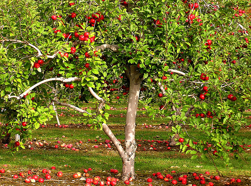

a fák fontos részei az emberiségnek. Rengeteg fonstos dolgot adnak nekünk a fák. Ezért kell tisztelnünk a természetet.
ők adják nekünk az oxigén nagy részét lletve rengeteg hasznos fa van mint példul az alma fa, körte fa stb.
mit tehetünk a fák érdekében?
A érdekében sok mindent lehet csinálni pl:
ültessünk kerünkbe saját fát
ne vágjunk ki annyi fát évente
törödjünk a természettel, ne szemtejlünk illetve ne bántjunk fákat
itt egy link amivel kicsit több mindnent tudhatsz meg:
Sok fajta fát ültethetünk. Pontosabban 8715 fajta fa van, de válasszunk most csak egy fajta fát legyen az alma fa.
hogyan ültetünk alma fát?

kezdés képp egy kis tipp a kora tavasz a megfelelő időpont az alma fa ültetéséhez
Előkészületként szedd ki a gyomokat és a füvet,
megtisztítva egy nagyjából 10 cm átmérőjű kört az átültetendő növény számára.
Az elsődleges kihívás a fák ültetésénél, a gyökerek nedvesen tartása - mind előtte, mind pedig ültetésük után.
Első lépésként áztasd a gyökereiket 30 percen keresztül vízben. Ha a gyökerek kiszáradtnak tűnnek, akkor áztasd 24 órán keresztül, hogy feléledjenek.
Érdemes beáztatunk fél napra az ültetés elött a gyökeres oltványunkat
Kezd azzal, hogy a gyökerek átmérőjénél kétszer nagyobb, és 30 centivel mélyebb gödröt ásol. Mikor úgy érzed, hogy a gödör elég mély, terjeszd szét a gyökereket a gödörben, és ellenőrizd a rügyek szintjét. A cél az, hogy a rügyek, nagyjából 5 centivel a föld felett legyenek.
Önts vizet a gödörbe, miközben visszatömöd azt, hogy kiszorítsd a talajból a levegőt. Az ültetés végeztével, megint öntözd meg jól. Tegyél 5-8 cm-es talajtakarót, hogy megakadályozd a nedvesség gyors elpárolgását és a gyom és a fű visszanövését.
készen vagy
végszó
a természet egy kincs amit óvnunk kell és ha az emberiség így folytatja akkor ezt a kincset el fogjuk veszíteni